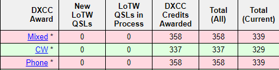

I probably do not know how it is supposed to work, but my Phone award total for DXCC shows 339 but there are sixI have not worked on Phone.  When I display the list for phone, These are on the list: Bouvet Is., Crozet Is. , Libya, Scarborough Is. Aves Is. and Mt Athos. Clicking on the prefix shows the QSL info blank (as it should). But, why on the list and it says I have 339 of 340 but actually only 334. Anyone know why this is? ClubLog is accurate. Thanks!! Al N6TA |